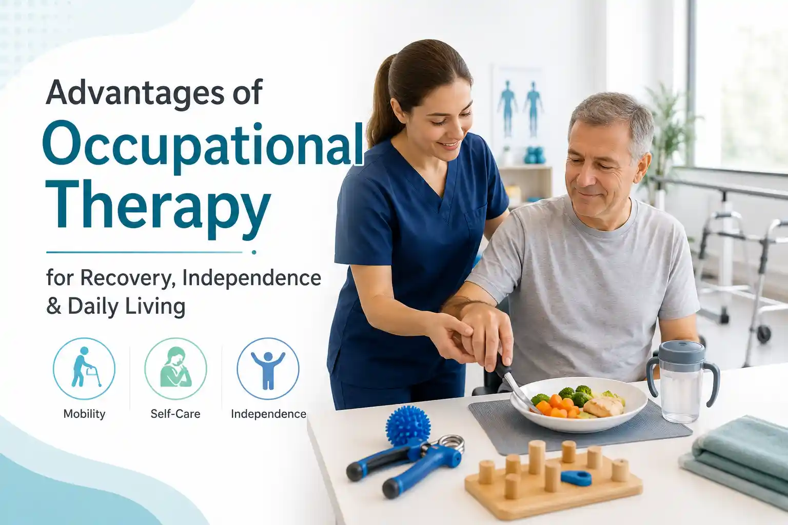

Advantages of Occupational Therapy for Recovery, Independence & Daily Living


26
May

Dr. Arpita Ganguly
BPT, MPT (Neuro), 6+ years clinical
experience in neuro rehabilitation & functional recovery
Advantages of Occupational Therapy for Recovery, Independence & Daily Living
covering from a stroke, brain injury, spinal cord injury, surgery, neurological condition, or age-related weakness, the real challenge is not only medical recovery. The bigger goal is returning to daily life with safety, confidence, and independence. This is where Occupational Therapy in Pune becomes highly valuable for patients and families.
Occupational therapy focuses on helping people perform everyday activities such as bathing, dressing, eating, writing, cooking, using the toilet, moving safely at home, returning to work, and participating in family life. It is practical, goal-based, and deeply connected to real-life needs. At Apricot Care Assisted Living and Rehabilitation in Pune, occupational therapy is designed to support Activities of Daily Living, fine motor skills, cognitive skills, home safety, assistive device training, and functional independence.
This blog explains the advantages of occupational therapy, who needs it, how it supports recovery, and when families should look for an occupational therapy centre near me in Pune.
What Is Occupational Therapy?
Occupational therapy is a rehabilitation approach that helps people regain, improve, or adapt the skills needed for daily living. In this context, "occupation" does not mean only a job. It means all meaningful activities a person needs, wants, or is expected to do in daily life.
For example, a physiotherapist may help a patient improve balance, walking, or arm strength. An occupational therapist helps the same patient use those improvements in real-life activities, such as getting out of bed safely, holding a spoon, buttoning a shirt, using a bathroom, or preparing a simple meal.
Occupational therapy may include:
- Self-care training
- Hand and fine motor skill exercises
- Cognitive retraining
- Balance and safety training during daily tasks
- Home modification advice
- Assistive device training
- Energy conservation techniques
- Family and caregiver education
This makes occupational therapy especially important for people who want to move from dependency to better functional independence.
Occupational Therapy in Pune: Why It Matters for Recovery and Daily Living
Families searching for Occupational Therapy in Pune are often looking for practical answers. They may ask:
- "Will my father be able to dress himself again after stroke?"
- "Can my mother safely use the bathroom after surgery?"
- "How can my loved one regain hand control after paralysis?"
- "Is there an occupational therapy center that supports home-based recovery?"
These are not small concerns. They affect dignity, confidence, family stress, caregiver workload, and quality of life.
In Pune, occupational therapy is useful for patients recovering from neurological, orthopedic, geriatric, post-surgical, and long-term rehabilitation needs. Apricot Care's Pune-based rehabilitation model includes in-centre support, home care solutions, nursing support, safe environment planning, and multidisciplinary therapy coordination.
Top Advantages of Occupational Therapy
1. Helps Patients Regain Independence in Daily Activities
One of the biggest occupational therapy benefits is improved independence in Activities of Daily Living, also called ADLs. These include bathing, dressing, grooming, toileting, eating, and moving from one place to another.
After stroke, injury, surgery, or illness, patients may struggle with tasks they previously did without help. Occupational therapy breaks each activity into smaller steps and teaches safe, practical methods to complete them.
For example, a patient with one-sided weakness after a stroke may learn how to wear a shirt using one hand, transfer safely from bed to chair, or use adaptive cutlery while eating.
2. Improves Fine Motor Skills and Hand Function
Many daily tasks require hand strength, grip, coordination, and finger control. Writing, holding a cup, using a phone, opening containers, combing hair, or managing buttons can become difficult after neurological or orthopedic conditions.
Occupational therapy uses targeted exercises and task-based practice to improve:
- Grip strength
- Finger coordination
- Hand-eye coordination
- Dexterity
- Writing ability
- Object handling
- Bilateral hand use
For patients recovering from stroke, brain injury, spinal cord injury, Parkinson's disease, or surgery, this can make daily life more manageable.
3. Supports Stroke and Neurological Recovery
Occupational therapy plays an important role in neurorehabilitation. Patients recovering from stroke, brain injury, spinal cord injury, multiple sclerosis, cerebral palsy, or Parkinson's disease may face physical, cognitive, and emotional challenges.
In stroke recovery, occupational therapy helps patients relearn daily activities such as brushing teeth, bathing, dressing, using utensils, and moving safely at home. Apricot Care's stroke rehabilitation page highlights occupational therapy as part of a multidisciplinary roadmap for regaining independence and ADL function.
This is why OT should not be seen as only exercise. It is functional retraining for real-life recovery.
4. Reduces Dependence on Family Members and Caregivers
When patients cannot perform basic tasks independently, family members often become full-time caregivers. This can create emotional, physical, and financial pressure.
Occupational therapy helps reduce this burden by training the patient to do more tasks safely on their own. Even small improvements, such as eating independently, using the toilet with less support, or transferring from bed to chair safely, can make a major difference for the family.
Caregiver training is also part of occupational therapy. Families learn how to assist without overhelping, how to prevent falls, and how to support recovery at home.
5. Makes the Home Safer for Recovery
A patient may perform well in a therapy centre but struggle at home because of unsafe flooring, poor lighting, narrow bathroom spaces, low seating, or lack of grab bars.
Occupational therapists assess the patient's environment and suggest practical changes such as:
- Grab bars in the bathroom
- Non-slip mats
- Raised toilet seats
- Better lighting
- Bed and chair height adjustments
- Furniture rearrangement
- Safer walking pathways
- Use of bath benches or handrails
For elderly patients, stroke survivors, and people with mobility challenges, home safety can reduce fall risk and support long-term independence.
6. Helps Patients Use Assistive Devices Correctly
Assistive devices are helpful only when patients know how to use them safely. Occupational therapy may include training with devices such as reachers, sock aids, modified spoons, button hooks, wheelchairs, bath benches, writing grips, and adaptive kitchen tools.
The goal is not to make the patient dependent on equipment. The goal is to use the right support at the right time so the person can perform daily tasks with better safety and confidence.
7. Improves Cognitive Skills Needed for Daily Life
Many patients struggle not only with movement but also with memory, attention, planning, sequencing, and problem-solving. This is common after stroke, traumatic brain injury, and some neurological conditions.
Occupational therapy helps patients practise cognitive skills through real-life tasks. For example:
- Remembering steps in a morning routine
- Following a simple cooking sequence
- Organising medicines
- Planning safe movement inside the house
- Managing basic work or household tasks
For brain injury recovery, functional occupational therapy is often combined with cognitive rehabilitation, speech therapy, psychological support, and family counselling.
8. Supports Return to Work, School, and Social Life
Recovery is not complete when a patient can walk or move better. True recovery also includes returning to meaningful roles.
Occupational therapy can help patients prepare for:
- Returning to office work
- Managing household responsibilities
- Participating in family functions
- Continuing hobbies
- Using public or private transport safely
- Rebuilding confidence in social settings
For some patients, this may include vocational rehabilitation, energy conservation, workstation modification, or adaptive strategies for work-related tasks.
9. Builds Confidence and Emotional Well-Being
Loss of independence can affect confidence. Patients may feel frustrated, embarrassed, anxious, or helpless when they cannot perform basic activities.
Occupational therapy supports emotional recovery by setting small, achievable goals. Each improvement builds confidence. Buttoning a shirt, holding a cup, writing a name, or walking safely to the bathroom can feel like a major victory during rehabilitation.
This patient-first approach is important because recovery is not only physical. It is also emotional, social, and personal.
10. Provides Personalised, Goal-Based Rehabilitation
Every patient has different needs. A senior recovering from a fall, a stroke survivor, a person with spinal cord injury, and a patient after surgery will not need the same plan.
A good occupational therapy center should assess:
- Medical condition
- Physical ability
- Cognitive ability
- Home environment
- Personal goals
- Family support
- Safety risks
- Daily routine challenges
At Apricot Care, occupational therapy is described as a collaborative process focused on patient goals, real-world tasks, home safety, assistive devices, fine motor skills, and cognitive retraining.
Who Can Benefit from Occupational Therapy?
Occupational therapy may help:
- Stroke survivors
- Patients with paralysis or hemiplegia
- People recovering from brain injury
- Patients with spinal cord injury
- Seniors with balance or mobility issues
- People with Parkinson's disease
- Patients after orthopedic surgery
- People recovering from hip or knee replacement
- Patients with hand weakness or coordination issues
- Individuals needing home safety support
- Families looking for long-term rehabilitation support
For spinal cord injury, occupational therapy supports ADL independence, wheelchair skills, assistive technology, home modification, caregiver education, and community reintegration.
How to Choose an Occupational Therapy Centre Near Me in Pune
When searching for an occupational therapy centre near me or occupational therapy center in Pune, do not choose only based on distance. Look for quality, safety, and proper rehabilitation planning.
Check whether the centre offers:
- Experienced occupational therapists
- Individual assessment
- Personalised care plans
- Neurorehabilitation support
- ADL training
- Home safety guidance
- Assistive device training
- Family education
- Coordination with physiotherapy and speech therapy
- Clean and accessible facility
- Home care or online support when required
A multidisciplinary rehabilitation centre is often better for complex recovery because physical, cognitive, speech, emotional, and daily living needs can be addressed together.
Occupational therapy is one of the most practical and meaningful parts of rehabilitation. It helps patients move beyond treatment and return to daily life with greater safety, confidence, and independence.
For families in Pune, occupational therapy can support recovery after stroke, injury, surgery, neurological conditions, aging-related weakness, and long-term disability. It improves daily activities, reduces caregiver pressure, supports home safety, builds confidence, and helps patients reconnect with the activities that matter most.
If you are looking for Occupational Therapy in Pune, choose a centre that understands both medical recovery and real-life independence.
Book an Occupational Therapy Assessment in Pune
If your loved one is finding it difficult to manage daily activities after stroke, injury, surgery, or neurological illness, Apricot Care Assisted Living and Rehabilitation can help with personalised occupational therapy, multidisciplinary rehabilitation, and family-guided recovery support.
FAQs
1. What is occupational therapy in simple words?
Occupational therapy helps people improve daily activities like dressing, eating, writing, bathing, and moving safely. At Apricot Care Assisted Living and Rehabilitation, Pune, therapy is planned to improve independence in everyday life.
2. What are the main advantages of occupational therapy?
It helps improve independence, hand function, daily living skills, safety, confidence, and quality of life. Patients in Pune can consider Apricot Care Assisted Living and Rehabilitation for personalised occupational therapy support.
3. Who needs occupational therapy?
People recovering from stroke, paralysis, brain injury, spinal cord injury, surgery, Parkinson's disease, or age-related weakness may need occupational therapy.
4. Is occupational therapy only for elderly patients?
No, occupational therapy can help children, adults, and seniors. The treatment depends on the patient's condition and daily activity challenges.
5. How is occupational therapy different from physiotherapy?
Physiotherapy improves movement, strength, and balance. Occupational therapy helps patients use those abilities in daily tasks like bathing, dressing, eating, and writing.
6. When should I search for an occupational therapy centre near me?
You should search when a patient struggles with daily activities, hand use, memory, movement, or safe home routines. In Pune, Apricot Care Assisted Living and Rehabilitation can help with structured occupational therapy care.
About
author
Dr. Arpita Ganguly (PT) is a Neuro Physiotherapist at Apricot
Care, Pune.
With 6 years of experience, she specializes in neuro-rehabilitation, geriatric care, and balance training to help patients improve mobility and functional independence.
With 6 years of experience, she specializes in neuro-rehabilitation, geriatric care, and balance training to help patients improve mobility and functional independence.